It's important to acknowledge that while mainstream EDM (Electronic Dance Music) artists today are largely white, cis, and male, the history and evolution of EDM involved many influences who weren't all cis, white, and male.
This timeline documents the early influencers of certain EDM genres (i.e. Frankie Knuckles, known as the "godfather" of house) as well as important technology that facilitated the emergence of different EDM genres (i.e. the Moog synthesizer).
If the above timeline breaks, go to this link!
The timeline above gives a glimpse as to how rich the history of EDM is, with songs and artists from different countries in Europe - particularly alternative and experimental bands who weren't afraid to be unconventional in their music production - and in the U.S., especially the house DJs who wanted to provide a safe space for queer/trans marginalized folks.
Looking at this timeline, I couldn't help but wonder how rich and diverse my own EDM listening taste was.
Was I listening to a variety of artists from different backgrounds?
Were the songs I had on repeat or the most songs I had on my EDM playlist from people of color (poc) or women/gender-nonconforming/nonbinary folks?
(Spoiler alert: they weren't).
Who were the top EDM artists I listened to? I could best determine this by seeing the artists who I had the most songs from on my main EDM playlist).
Here is my main EDM playlist that has over 1.1k songs:
I first used an open-source tool called Exportify to convert this playlist into a csv file.
note: you should be able to connect your spotify account to this web app
Once I saw my list of playlists on Spotify:
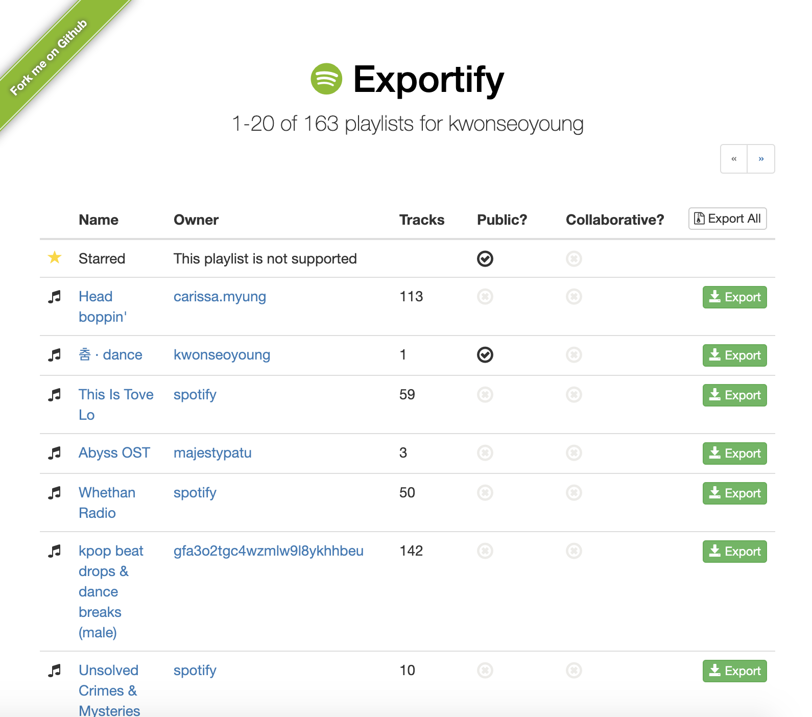I searched through my tens of playlists (I have a lot) using the arrow buttons on the top and bottom of the page, then clicked 'export' on the playlist I was looking for: in this case, it was a playlist titled "slide into my E'DM's."
I downloaded the outputted .csv file and then took a look at it on Google Sheets:
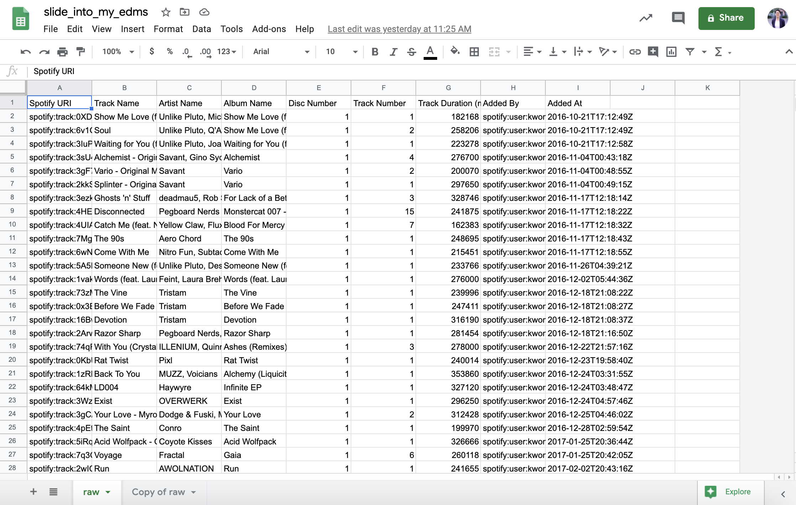What I care most about analyzing is the artist name, because I want to see how often each artist's name shows up on my playlist as a way for me to determine who I listen to the most/who my top artists are. In this case, that would be Column C (highlighted below).
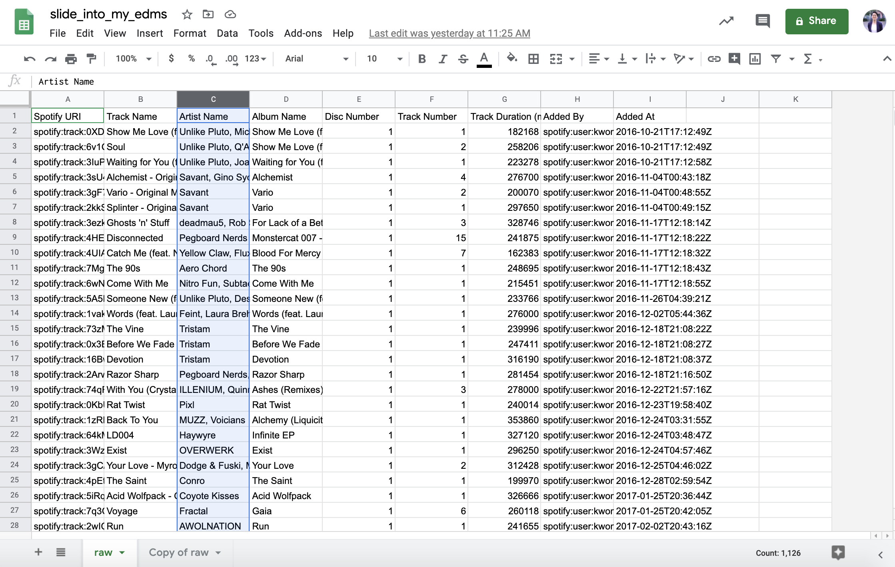I isolated the column with the artist name(s) and put it on another Google sheet/tab. Then, I went over to 'data' and split the text into columns to see which artist was the main artist and which artist(s) were featured on each song on my playlist.
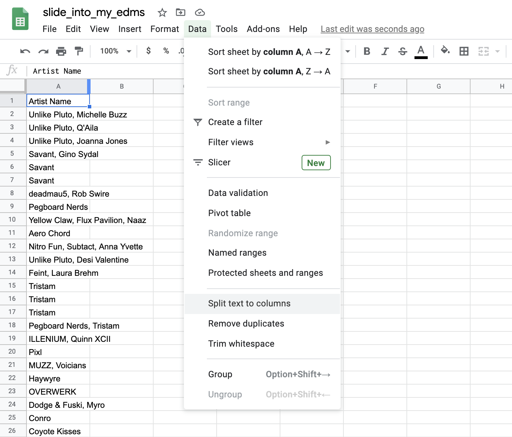 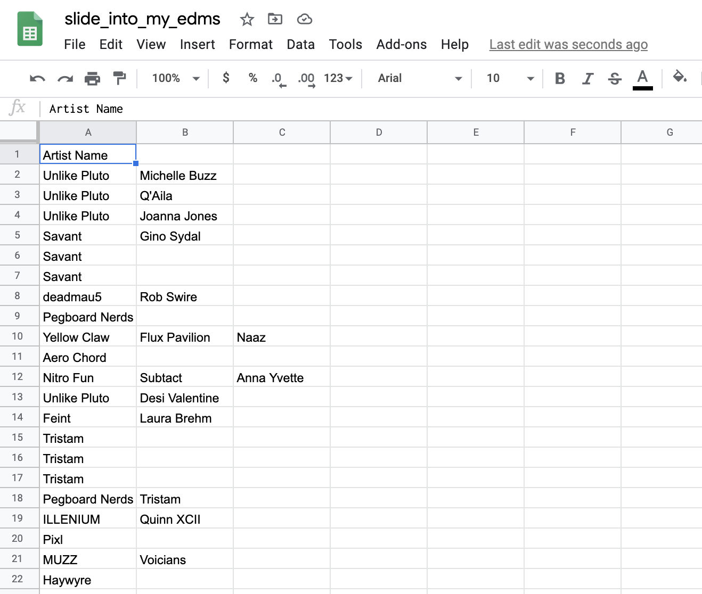I now want to see how many times an artist's name shows up in Column 1, or the first artist that is credited for each song on my playlist (since usually this artist is the main artist).
To count this, I made a separate column titled "Count (Artist 1)", and then typed in the following command: =COUNTIF(A$2:A$1126, A2)
Note: "A$1126" could be "A$700" or "A$10" or any other number. this number should match the length of your playlist. if your playlist has 1000 songs total, it should be "A$1000".
----- Quick explanation of the logic behind this function -----
The function =COUNTIF() takes in 2 arguments. The 1st argument is the range of data you're wanting to compare a data point to, and the 2nd argument is that specific data point. The above function essentially looks at all cells inclusively between A2 and A1126 (the 1st argument - there are 1126 songs in my playlist and A1 is just the title of the column) and sees how many times A2 (the 2nd argument) matches with another cell in that range of cells.
The dollar symbol ($) is so that you can apply this function to the rest of your column (i.e. comparing A3 with A2 through A1126, A4 with A2 through A1126 etc.) Without shifting that range A2:A1126. In Google Sheets, if you don't put the dollar sign in between the column letter and number, the range will shift if you apply this function to an entire column (i.e. without the $ sign, you would be comparing A3 with A3 through A1127 etc.)
----- End of quick explanation -----
Once I have applied that function to the whole column, I now have a list of the number of times each first artist listed on each song have repeated within the playlist. I can do this for the second artist listed as well, but to keep things simple, I will keep my rudimentary analysis to Artist 1 only.
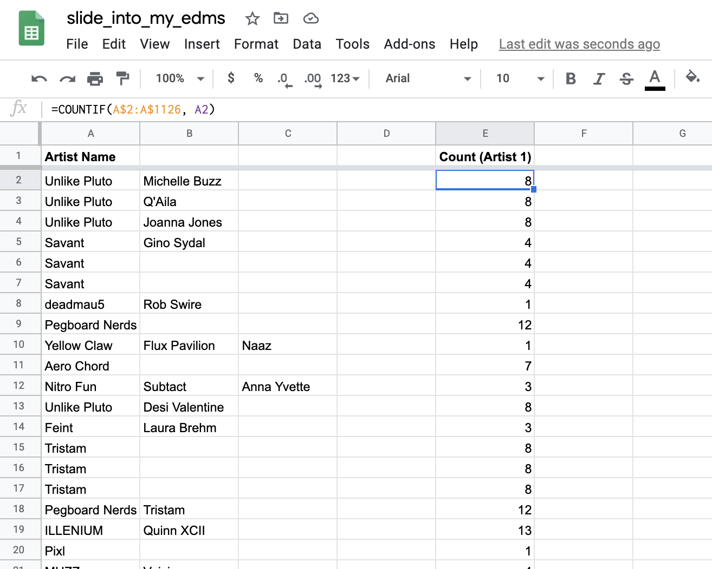I can now use the 'filter' function on google sheets to order the artist name column by how often they repeat from greatest to least number of times.
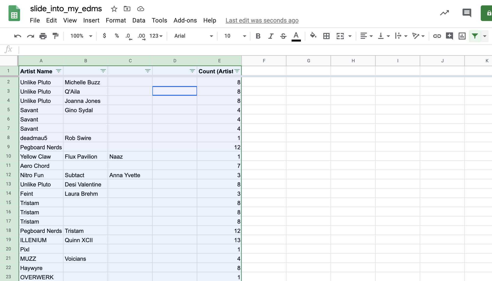 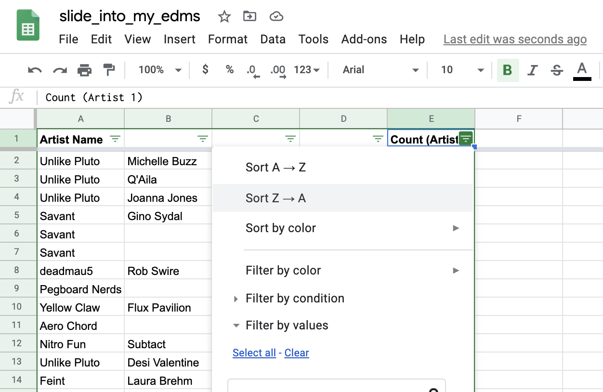Now I can see who is featured most among all the songs on this playlist!
In this playlist, my top artist is actually WRLD, an artist on the Canadian label Monstercat. This actually came as a slight surprise to me, because I wouldn't automatically list him on my top 10 favorite artists despite the fact this songs on this playlist feature him most as the main artist.
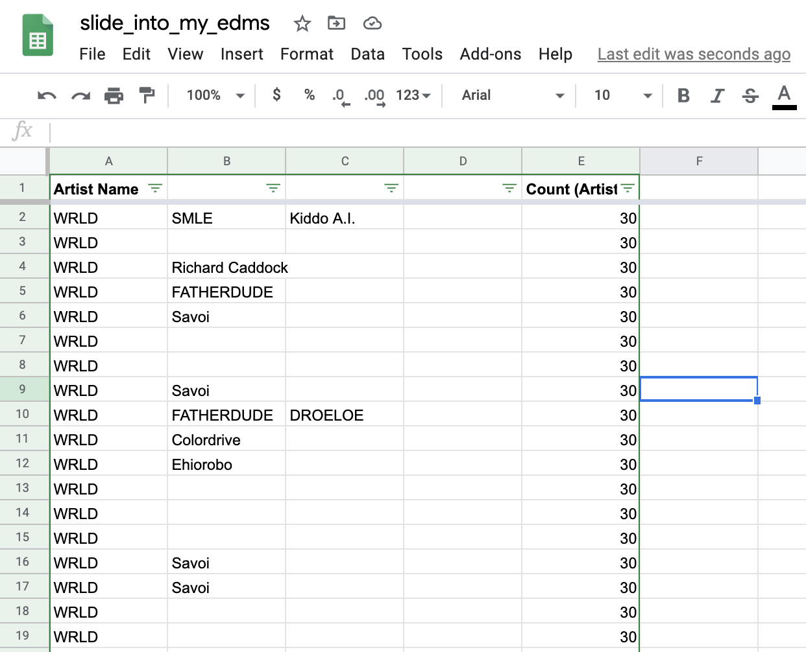An easier way to find out each unique artist I listen to the most is to use Google Sheet's pivot tables!
I can do this by going to 'Data' and select 'Pivot table'. It's best to create a pivot table on a new sheet to avoid erasing any hard work done on the current sheet.
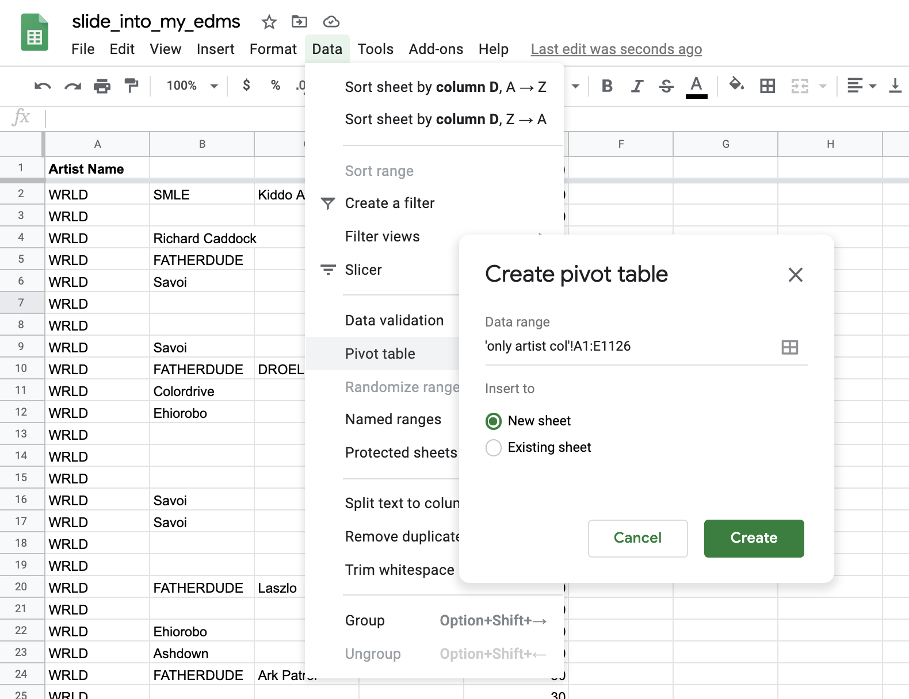From here, I went to 'Rows' and select 'Artist Name' and 'Values' to select 'Count (Artist 1)'. I had 'Count (artist 1)' be summarized by 'COUNTA' and show as 'Default'.
I then sorted 'Artist Name' by 'COUNTA of Count (Artist 1)' and have this be in descending order (greatest to least). This will give the number of times an artist shows up in a playlist, and WRLD once again is shown to repeat 30 times in my whole playlist.
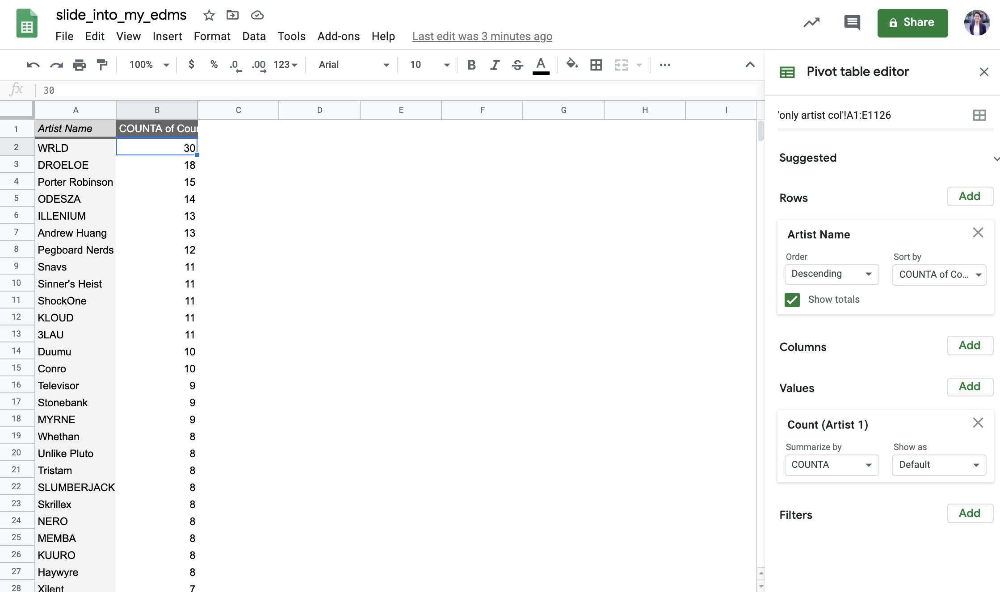a series of interactive graphs
Note: 'Kinda' indicates the existence of groups with at least one non cis male member. 'Unknown' refers to artists who are generally pretty private and don't have personal details on the Internet (i.e. KLOUD).
There definitely is a diversity issue within my own treasured 'slide into my E'DM's' playlist. Around 93% of my top 30 artists are white and around 87% of them are cis male. I'm not sure what's more embarrassing: the fact that I've been a long-time EDM fan (this year marks 10 years) who wasn't aware of the history of EDM until this year, or realizing that I as a POC non-male non-cis listener still naturally gravitate to music from cis white male musicians even though I thought I made the effort to branch out more.
In Gen Z terms, turns out I was more 'basic' than I thought I was.
Asking my friends about their own music tastes & listening habits
These casual interviews with two close friends of mine who listened to EDM for similar durations shed light on the nuances regarding the broader topic of "diversity in EDM" and why it's not as simple as just pointing the finger at straight white cis males.
One main takeaway that I got from talking with Ivy and Emily is that issues underlying the EDM scene are common in the music and entertainment industries as a whole. The same factors that whitewash EDM contribute to the traditional dominance of cis white males, or more broadly, just males, in other industries.
EDM labels and music labels in general need to take firmer stances and actually push for structural change in the industry to highlight local BIPOC and queer/trans voices, because the industry drives the culture enjoyed by consumers, not necessarily the other way around. However, according to Emily, this is hard to do if the company is too large or doesn't have enough resources.
made with love by kwon.js